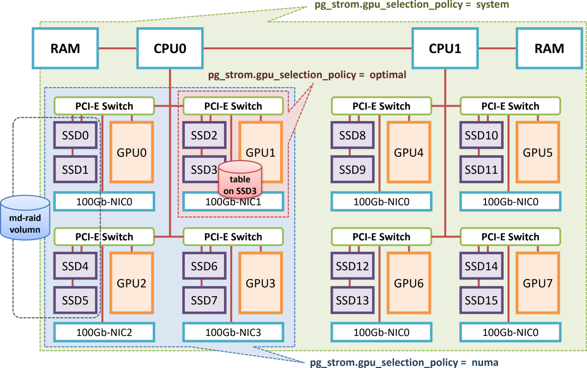

GPU-Direct SQL
Overview
For the fast execution of SQL workloads, it needs to provide processors rapid data stream from storage or memory, in addition to processor's execution efficiency. Processor will run idle if data stream would not be delivered.
GPUDirect SQL Execution directly connects NVMe-SSD which enables high-speed I/O processing by direct attach to the PCIe bus and GPU device that is also attached on the same PCIe bus, and runs SQL workloads very high speed by supplying data stream close to the wired speed of the hardware.
Usually, PostgreSQL data blocks on the storage shall be once loaded to CPU/RAM through the PCIe bus, then, PostgreSQL runs WHERE-clause for filtering or JOIN/GROUP BY according to the query execution plan. Due to the characteristics of analytic workloads, the amount of result data set is much smaller than the source data set. For example, it is not rare case to read billions rows but output just hundreds rows after the aggregation operations with GROUP BY.
In the other words, we consume bandwidth of the PCIe bus to move junk data, however, we cannot determine whether rows are necessary or not prior to the evaluation by SQL workloads on CPU. So, it is not avoidable restriction in usual implementation.

GPU Direct SQL Execution changes the flow to read blocks from the storage sequentially. It directly loads data blocks to GPU using peer-to-peer DMA over PCIe bus, then runs SQL workloads on GPU device to reduce number of rows to be processed by CPU. In other words, it utilizes GPU as a pre-processor of SQL which locates in the middle of the storage and CPU/RAM for reduction of CPU's load, then tries to accelerate I/O processing in the results.
This feature internally uses the NVIDIA GPUDirect Storage module (nvidia-fs) to coordinate P2P data transfer from NVME storage to GPU device memory.
So, this feature requires this Linux kernel module, in addition to PG-Strom as an extension of PostgreSQL.
In addition, an NVME-compatible SSD is required as a storage device, but other storage systems supported by NVIDIA GPUDirect Storage (such as remote disks connected via NVME-oF or NFS-over-RDMA) can also be used. However, it cannot be said that these have been sufficiently tested, so it is best to perform separate operation testing before use.
System Setup
Driver Installation
The previous version of PG-Strom required its original Linux kernel module developed by HeteroDB for GPU-Direct SQL support, however, the version 3.0 revised the software design to use GPUDirect Storage provided by NVIDIA, as a part of CUDA Toolkit. The Linux kernel module for GPUDirect Storage (nvidia-fs) is integrated into the CUDA Toolkit installation process and requires no additional configuration if you have set up your system as described in the Installation chapter of this manual.
You can check whether the required Linux kernel drivers are installed using the modinfo command or lsmod command.
$ modinfo nvidia-fs
filename: /lib/modules/5.14.0-427.18.1.el9_4.x86_64/extra/nvidia-fs.ko.xz
description: NVIDIA GPUDirect Storage
license: GPL v2
version: 2.20.5
rhelversion: 9.4
srcversion: 096A726CAEC0A059E24049E
depends:
retpoline: Y
name: nvidia_fs
vermagic: 5.14.0-427.18.1.el9_4.x86_64 SMP preempt mod_unload modversions
sig_id: PKCS#7
signer: DKMS module signing key
sig_key: 18:B4:AE:27:B8:7D:74:4F:C2:27:68:2A:EB:E0:6A:F0:84:B2:94:EE
sig_hashalgo: sha512
: :
$ lsmod | grep nvidia
nvidia_fs 323584 32
nvidia_uvm 6877184 4
nvidia 8822784 43 nvidia_uvm,nvidia_fs
drm 741376 2 drm_kms_helper,nvidia
Designing Tablespace
GPU Direct SQL Execution shall be invoked in the following case.
- The target table to be scanned locates on the partition being consist of NVMe-SSD.
/dev/nvmeXXXXblock device, or md-raid0 volume which consists of NVMe-SSDs only.
- Or, the table to be scanned is located in a directory explicitly specified by
pg_strom.manual_optimal_gpus.- This setting is required when using remote storage connected via a high-speed network such as NFS-over-RDMA.
- The target table size is larger than
pg_strom.gpudirect_threshold.- You can adjust this configuration. Its default is physical RAM size of the system plus 1/3 of
shared_buffersconfiguration.
- You can adjust this configuration. Its default is physical RAM size of the system plus 1/3 of
Note
Striping reads from multiple NVME-SSD volumes using md-raid0 or reading from remote disks over high-speed network requires the enterprise subscription provided by HeteroDB,Inc.
In order to deploy the tables on the partition consists of NVME-SSD, you can use the tablespace function of PostgreSQL to specify particular tables or databases to place them on NVME-SSD volume, in addition to construction of the entire database cluster on the NVME-SSD volume.
For example, you can create a new tablespace below, if NVME-SSD is mounted at /opt/nvme.
CREATE TABLESPACE my_nvme LOCATION '/opt/nvme';
In order to create a new table on the tablespace, specify the TABLESPACE option at the CREATE TABLE command below.
CREATE TABLE my_table (...) TABLESPACE my_nvme;
Or, use ALTER DATABASE command as follows, to change the default tablespace of the database.
Note that tablespace of the existing tables are not changed in thie case.
ALTER DATABASE my_database SET TABLESPACE my_nvme;
Operations
Distance between GPU and NVME
On selection of server hardware and installation of GPU and NVME-SSD, hardware configuration needs to pay attention to the distance between devices, to pull out maximum performance of the device.
The process of reading from an NVME-SSD (or a high-speed NIC used for remote reading) and loading directly to a GPU is synonymous with the process of transferring data between two different PCI-E devices. If you think of the PCI-E bus as a kind of tree-shaped network, it is intuitive to understand that the device with a closer network distance and wider bandwidth is more suitable for data transfer.
The photo below shows the motherboard of an HPC server, with eight PCI-E x16 slots connected to their counterparts via a PCI-E switch. The slot on the left side of the photo is connected to CPU1, and the slot on the right side is connected to CPU2.
In general, a dedicated PCI-E switch is faster than a PCI-E controller built into the CPU, so for example, when scanning a table built on SSD-2 using GPU Direct SQL, the optimal GPU selection would be GPU-2. It is also possible to use GPU-1, which is connected under the same CPU, but it may be better to avoid using GPU-3 and GPU-4, which cross NUMA and involve CPU-to-CPU communication.

PG-Strom calculate logical distances on any pairs of GPU and NVME-SSD using PCIe bus topology information of the system on startup time.
It is displayed at the start up log. Each NVME-SSD determines the preferable GPU based on the distance, for example, GPU1 shall be used on scan of the /dev/nvme2 in the default.
$ pg_ctl restart
:
LOG: PG-Strom version 6.0.1 built for PostgreSQL 16 (githash: 1fe955f845063236725631c83434b00f68a8d4cf)
LOG: PG-Strom binary built for CUDA 12.6 (CUDA runtime 12.4)
LOG: PG-Strom: GPU0 NVIDIA A100-PCIE-40GB (108 SMs; 1410MHz, L2 40960kB), RAM 39.38GB (5120bits, 1.16GHz), PCI-E Bar1 64GB, CC 8.0
LOG: PG-Strom: GPU1 NVIDIA A100-PCIE-40GB (108 SMs; 1410MHz, L2 40960kB), RAM 39.38GB (5120bits, 1.16GHz), PCI-E Bar1 64GB, CC 8.0
LOG: [0000:41:00:0] GPU1 (NVIDIA A100-PCIE-40GB; GPU-13943bfd-5b30-38f5-0473-78979c134606)
LOG: [0000:01:00:0] GPU0 (NVIDIA A100-PCIE-40GB; GPU-cca38cf1-ddcc-6230-57fe-d42ad0dc3315)
LOG: [0000:c3:00:0] nvme2 (INTEL SSDPF2KX038TZ) --> GPU0,GPU1 [dist=130]
LOG: [0000:c1:00:0] nvme0 (INTEL SSDPF2KX038TZ) --> GPU0,GPU1 [dist=130]
LOG: [0000:c2:00:0] nvme1 (INTEL SSDPF2KX038TZ) --> GPU0,GPU1 [dist=130]
LOG: [0000:82:00:0] nvme4 (INTEL SSDPF2KX038TZ) --> GPU0,GPU1 [dist=130]
LOG: [0000:c6:00:0] nvme3 (Corsair MP600 CORE) --> GPU0,GPU1 [dist=130]
:
For small systems such as single-socket servers without PCI-E switches, the automatic configuration is fine.
However, if the GPU and NVME-SSD are connected to different CPUs, or if you connect to remote storage (NVME-oF or NFS-over-RDMA, etc.) via a high-speed network, the location of the storage on the PCI-E bus cannot be detected automatically, so you must manually configure their correspondence.
For example, if you want to assign gpu2 and gpu3 to nvme3, and mount remote storage to /mnt/nfs and assign it to gpu1, write the following settings in postgresql.conf. Note that this manual configuration takes precedence over the automatic configuration.
pg_strom.manual_optimal_gpus = 'nvme3=gpu2:gpu3,/mnt/nfs=gpu1'
Controls using GUC parameters
There are four GPU parameters related to GPU Direct SQL Execution.
pg_strom.gpudirect_enabled-
This parameter turn on/off the functionality of GPU-Direct SQL. Default is
on. pg_strom.gpudirect_driver-
You can specify the driver to be used for GPU Direct Execution.
-
If the
heterodb-extramodule is installed, the default value will becufile,nvme_strom, orvfs, which is an emulation of GPU Direct SQL by CPU, depending on the system state. If the module is not installed, onlyvfswill be used. -
nvme_stromis a proprietary Linux kernel module that was previously used to use GPU Direct SQL in RHEL7/8 environments, and is now deprecated. pg_strom.gpudirect_threshold- Specifies the minimum table size for which GPU -Direct SQL should be used.
- If the physical layout of the table satisfies the prerequisites for GPU Direct SQL and the table size is larger than the value of this parameter, PG-Strom will select GPU Direct SQL Execution.
- The default value of this parameter is
2GB. In other words, for obviously small tables, it prioritizes reading from PostgreSQL buffers rather than GPU Direct SQL. - This is based on the assumption that even if GPU Direct SQL Execution has an advantage for one read, it is not necessarily advantageous for tables that can be processed on memory, considering the use of disk cache from the second time onwards.
pg_strom.gpu_selection_policy-
When using GPU Direct SQL, the GPU selected from the location of the target table will be used (unless manually configured), but specify the selection policy. There are three policies that can be specified:
-
optimal(default) ... Use the nearest GPU
-
numa... Use GPUs that belong to the same NUMA node
-
system... Use all GPUs installed in the system
-
Details will be explained in the next section.
GPU Selection Policy
The following log was taken when PostgreSQL (PG-Strom) was started, and shows the GPUs and NVME-SSDs recognized by the system.
In the line for each NVME-SSD, the name of the device is output along with a list of the nearest GPUs and their physical distance. This server is relatively small, and all NVME-SSDs are connected to GPU0 and GPU1 at equal distances, but on larger servers, the distance between each GPU and the NVME-SSD may vary.
In this section, we explain the GPU selection policy based on the distance between the GPU and the NVME-SSD.
$ pg_ctl restart
:
LOG: PG-Strom version 6.0.1 built for PostgreSQL 16 (githash: 1fe955f845063236725631c83434b00f68a8d4cf)
LOG: PG-Strom binary built for CUDA 12.6 (CUDA runtime 12.4)
LOG: PG-Strom: GPU0 NVIDIA A100-PCIE-40GB (108 SMs; 1410MHz, L2 40960kB), RAM 39.38GB (5120bits, 1.16GHz), PCI-E Bar1 64GB, CC 8.0
LOG: PG-Strom: GPU1 NVIDIA A100-PCIE-40GB (108 SMs; 1410MHz, L2 40960kB), RAM 39.38GB (5120bits, 1.16GHz), PCI-E Bar1 64GB, CC 8.0
LOG: [0000:41:00:0] GPU1 (NVIDIA A100-PCIE-40GB; GPU-13943bfd-5b30-38f5-0473-78979c134606)
LOG: [0000:01:00:0] GPU0 (NVIDIA A100-PCIE-40GB; GPU-cca38cf1-ddcc-6230-57fe-d42ad0dc3315)
LOG: [0000:c3:00:0] nvme2 (INTEL SSDPF2KX038TZ) --> GPU0,GPU1 [dist=130]
LOG: [0000:c1:00:0] nvme0 (INTEL SSDPF2KX038TZ) --> GPU0,GPU1 [dist=130]
LOG: [0000:c2:00:0] nvme1 (INTEL SSDPF2KX038TZ) --> GPU0,GPU1 [dist=130]
LOG: [0000:82:00:0] nvme4 (INTEL SSDPF2KX038TZ) --> GPU0,GPU1 [dist=130]
LOG: [0000:c6:00:0] nvme3 (Corsair MP600 CORE) --> GPU0,GPU1 [dist=130]
:
The following figure is a block diagram of a large-scale GPU server with dual sockets and a built-in PCI-E switch.
For example, when reading data from SSD3 and loading it to a GPU somewhere, the GPU that is "closest" in terms of distance between PCI-E devices is GPU1.
In this case, if you specify the configuration parameter pg_strom.gpu_selection_policy=optimal, only GPU1 will be used for GPU-Direct SQL, and other GPUs will not be involved in scanning tables located on SSD3.

However, this can sometimes lead to problems.
Let's consider the case where SSD0, SSD1, SSD4 and SSD5 are configured as a logical volume using md-raid, and a table is built on top of the RAID volume.
The nearest GPU for SSD0 and SSD1 is GPU0, and the nearest GPU for SSD4 and SSD5 is GPU2. If the GPU selection policy is optimal, there will be no optimal GPU for the md-raid volumn. In this case, since there is no target GPU, it will be decided not to use GPU-Direct SQL.
To change this, set pg_strom.gpu_selection_policy=numa.
This policy selects GPUs belonging to the same NUMA node as targets for GPU-Direct SQL.
When the GPU selection policy is numa, the schedulable GPUs for all SSDs (SSD0, SSD1, SSD4, SSD5) included in the md-raid partition are GPU0 to GPU3 in common. Therefore, reads from the md-raid partition are evenly distributed to these four GPUs.
Because communication from the SSD to the GPU goes through the CPU's PCI-E controller, throughput may decrease slightly, but with recent CPUs that support PCI-E4.0 or later, there does not seem to be much difference in speed.
Finally, we will explain pg_strom.gpu_selection_policy=system.
This policy selects all GPUs as targets for scheduling in GPU-Direct SQL, regardless of the distance of the PCI-E device.
For example, in an extreme case, if all GPUs from SSD0 to SSD15 are configured as a single md-raid partition, there will be no GPU that is commonly "preferred" for all SSDs. Therefore, a selection policy is provided that allows all GPUs to be scheduled in GPU-Direct SQL, taking into account the fact that some data communication between CPUs will occur.
In summary, PG-Strom determines the GPU to be used for GPU Direct SQL as follows:
- Identify the file path of the table or Arrow file to be scanned.
- If the path (or the directory containing it) and the GPU combination are described in
pg_strom.manual_optimal_gpus, use that GPU. - Identify the NVME-SSD that stores the file. If the file is stored on an md-raid partition, all NVME-SSDs that make up the RAID are targeted.
- Derive a set of GPUs that can be scheduled for each NVME-SSD according to
pg_strom.gpu_selection_policy. If there are multiple NVME-SSDs, the logical AND of these GPUs is the schedulable GPU. - If there is no schedulable GPU, GPU-Direct SQL is not used. This includes the case where the table is not built on an NVME-SSD.
Miscellaneous
Ensure usage of GPU Direct SQL
EXPLAIN command allows to ensure whether GPU Direct SQL Execution shall be used in the target query, or not.
In the example below, a scan on the lineorder table by Custom Scan (GpuPreAgg) shows GPU-Direct with 2 GPUs <0,1>. In this case, GPU-Direct SQL shall be used to scan from the lineorder table with GPU0 and GPU1.
ssbm=# explain
select sum(lo_revenue), d_year, p_brand1
from lineorder, date1, part, supplier
where lo_orderdate = d_datekey
and lo_partkey = p_partkey
and lo_suppkey = s_suppkey
and p_category = 'MFGR#12'
and s_region = 'AMERICA'
group by d_year, p_brand1;
QUERY PLAN
---------------------------------------------------------------------------------------------------------------
HashAggregate (cost=13806407.68..13806495.18 rows=7000 width=46)
Group Key: date1.d_year, part.p_brand1
-> Gather (cost=13805618.73..13806355.18 rows=7000 width=46)
Workers Planned: 2
-> Parallel Custom Scan (GpuPreAgg) on lineorder (cost=13804618.73..13804655.18 rows=7000 width=46)
GPU Projection: pgstrom.psum(lo_revenue), d_year, p_brand1
GPU Join Quals [1]: (p_partkey = lo_partkey) [plan: 2500011000 -> 98584180 ]
GPU Outer Hash [1]: lo_partkey
GPU Inner Hash [1]: p_partkey
GPU Join Quals [2]: (s_suppkey = lo_suppkey) [plan: 98584180 -> 19644550 ]
GPU Outer Hash [2]: lo_suppkey
GPU Inner Hash [2]: s_suppkey
GPU Join Quals [3]: (d_datekey = lo_orderdate) [plan: 19644550 -> 19644550 ]
GPU Outer Hash [3]: lo_orderdate
GPU Inner Hash [3]: d_datekey
GPU Group Key: d_year, p_brand1
Scan-Engine: GPU-Direct with 2 GPUs <0,1>
-> Parallel Custom Scan (GpuScan) on part (cost=100.00..12682.86 rows=32861 width=14)
GPU Projection: p_brand1, p_partkey
GPU Scan Quals: (p_category = 'MFGR#12'::bpchar) [plan: 2000000 -> 32861]
Scan-Engine: GPU-Direct with 2 GPUs <0,1>
-> Parallel Custom Scan (GpuScan) on supplier (cost=100.00..78960.47 rows=830255 width=6)
GPU Projection: s_suppkey
GPU Scan Quals: (s_region = 'AMERICA'::bpchar) [plan: 9999718 -> 830255]
Scan-Engine: GPU-Direct with 2 GPUs <0,1>
-> Parallel Seq Scan on date1 (cost=0.00..62.04 rows=1504 width=8)
(26 rows)
Attension for visibility map
Right now, GPU routines of PG-Strom cannot run MVCC visibility checks per row, because only host code has a special data structure for visibility checks. It also leads a problem.
We cannot know which row is visible, or invisible at the time when PG-Strom requires P2P DMA for NVME-SSD, because contents of the storage blocks are not yet loaded to CPU/RAM, and MVCC related attributes are written with individual records. PostgreSQL had similar problem when it supports IndexOnlyScan.
To address the problem, PostgreSQL has an infrastructure of visibility map which is a bunch of flags to indicate whether any records in a particular data block are visible from all the transactions. If associated bit is set, we can know the associated block has no invisible records without reading the block itself.
GPU Direct SQL Execution utilizes this infrastructure. It checks the visibility map first, then only "all-visible" blocks are required to read with P2P DMA.
VACUUM constructs visibility map, so you can enforce PostgreSQL to construct visibility map by explicit launch of VACUUM command.
VACUUM ANALYZE linerorder;